Systèmes NoSQL: le partitionnement¶
La réplication est essentiellement destinée à pallier les pannes en dupliquant une collection sur plusieurs serveurs et en permettant donc qu’un serveur prenne la relève quand un autre vient à faillir. Le fait de disposer des mêmes données sur plusieurs serveurs par réplication ouvre également la voie à la distribution de la charge (en recherche, en insertion) et donc à la scalabilité. Ce n’est cependant pas une méthode appliquable à grande échelle car, sur ce que nous avons vu jusqu’ici, elle implique la copie de toute la collection sur tous les serveurs.
Le partitionnement, étudié dans ce chapitre, est la technique privilégiée pour obtenir une véritable scalabilité. Commençons par quelques rappels, que vous pouvez passer allègrement si vous êtes familier des notions de base en gestion de données.
S1: les bases¶
Supports complémentaires:
Principes généraux¶
On considère une collection constituée de documents (au sens général du terme = valeur plus ou moins structurée) dotés d’un identifiant. Dans ce chapitre, on va essentiellement voir une collection comme un ensemble de paires (i, d), où i est un identifiant et d le document associé.
Le principe du partitionnement s’énonce assez simplement: la collection est divisée en fragments formant une partition de l’ensemble des documents.
Vocabulaire: ensemble, fragment, élément
Un petit rappel pour commencer. Une partition d’un ensemble \(S\) est un ensemble \(\{F_1, F_2, \cdots, F_n\}\) de parties de \(S\), que nous appellerons fragments, tel que:
\(\bigcup_i F_i = S\)
\(F_i \cap F_j = \emptyset\) pour tout \(i, j, i \not= j\)
Dit autrement: chaque élément de la collection \(S\) est contenu dans un et un seul fragment \(F_i\).
Dans notre cas \(S\) est une collection, les éléments sont des documents, et les fragments sont des sous-ensembles de documents.
Note
On trouvera souvent la dénomination shard pour désigner un fragment, et sharding pour désigner le partitionnement.
Clé de partitionnement¶
Un partitionnement s’effectue toujours en fonction d’une clé, soit un ou plusieurs attributs dont la valeur sert de critère à l’affectation d’un document à un fragment. La première décision à prendre est donc le choix de la clé.
Un bon partitionnement répartit les documents en fragments de taille comparable. Cela suppose que la clé soit suffisamment discriminante pour permettre de diviser la collection avec une granularité très fine (si possible au niveau du document lui-même). Choisir par exemple un attribut dont la valeur est constante ou réduite à un petit nombre de choix, ne permet pas au système de séparer les documents, et on obtiendra un partitionnement de très faible qualité.
Idéalement, on choisira comme clé de partitionnement l’identifiant unique des documents. La granularité de division de la collection tombe alors au niveau du document élémentaire, ce qui laisse toute flexibilité pour décider comment affecter chaque document à un fragment. C’est l’hypothèse que nous adoptons dans ce qui suit.
Structures¶
Il existe deux grandes approches pour déterminer une partition en fonction d’une clé: par intervalle et par hachage.
Dans le premier cas (par intervalle), on obtient un ensemble d’intervalles disjoints couvrant le domaine de valeurs de la clé; à chaque intervalle correspond un fragment.
Dans le second cas (par hachage), une fonction appliquée à la clé détermine le fragment d’affectation.
Elle déterminent la construction des structures de données représentant le partitionnement. Que le partitionnement soit par hachage ou par intervalle, ces structures sont toujours au nombre de deux.
la structure de routage établit la correspondance entre la valeur d’une clé et le fragment qui lui est associé (ou, très précisément, l’espace de stockage de ce fragment);
la structure de stockage est un ensemble d’espaces de stockages séparés, contenant chacun un fragment.
Sans la structure de routage, rien ne fonctionne. Elle se doit de fournir un support très efficace à l’identification du fragment correspondant à une clé, et on cherche en général à faire en sorte qu’elle soit suffisamment compacte pour tenir en mémoire RAM. Les fragments sont, eux, nécessairement stockés séquentiellement sur disque (pour des raisons de persistance) et placés si possible en mémoire (Fig. 71)
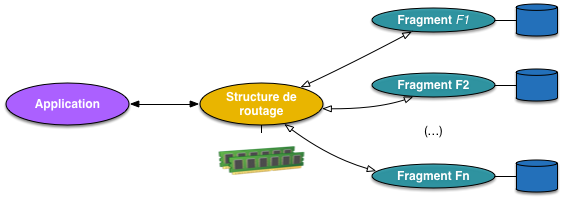
Fig. 71 Vision générale des structures du partitionnement¶
La gestion de ces structures varie ensuite d’un système à l’autre, mais on retrouve quelques grand principes.
Dynamicité.
Un partitionnement doit être dynamique: en fonction de l’évolution de la taille de la collection et du nombre de ressources allouées à la structure, le nombre de fragments doit pouvoir évoluer. C’est important pour optimiser l’utilisation de l’espace disponible et obtenir les meilleurs performances. C’est aussi, techniquement, la propriété la plus difficile à satisfaire.
Opérations.
Les opérations disponibles dans une structure de partitionnement sont de type « dictionnaire ».
get(i) : d renvoie le document dont l’identifiant est i;
put(i, d) insère le document d avec la clé i;
delete(i) recherche le document dont l’identifiant est i et le supprime;
range(i, j): [d] renvoie l’ensemble des documents d dont l’identifiant est compris entre i et j.
Les trois premières opérations s’effectuent sur un seul fragment. La dernière peut impliquer plusieurs fragments, tous au pire.
Le fait de devoir parcourir toute la collection ne signifie pas que le partitionnement est inutile, au contraire. En effectuant le parcours en parallèle on diminue globalement par N le temps de traitement.
Et en distribué ?¶
Dans un système distribué, le principe du partitionnement se transpose assez directement de la présentation qui précède. La Fig. 72 montre une architecture assez générique dont nous verrons quelques variantes pratiques.
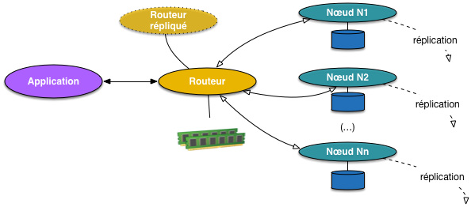
Fig. 72 Partitionnement et systèmes distribués¶
Un nœud particulier, le routeur, maintient la structure de routage, reçoit les requêtes de l’application et les redirige vers les nœuds en charge du stockage. Ces derniers stockent les fragments. On pourrait imaginer une équivalence stricte (un nœud = un fragment) mais pour des raisons de souplesse du système, un même nœud est en général en charge de plusieurs fragments.
Cette organisation s’additionne à celle gérant la réplication. Le routeur par exemple doit être synchronisé avec au moins un nœud-copie apte à le supléer en cas de défaillance; de même, chaque nœud de stockage gère la réplication des fragments dont il a la charge et en informe le routeur pour que ce dernier puisse rediriger les requêtes en cas de besoin.
Bien que cette figure s’applique à une grande majorité des systèmes pratiquant le partitionnement, il est malheureusement nécessaire de souligner que le vocabulaire varie constamment.
le routeur est dénommé, selon les cas, Master, Balancer, Primary, Router/Config server, …
les fragments sont désignés par des termes comme chunk, shard, tablet, region, bucket,…
et ainsi de suite: il faut savoir s’adapter.
Note
La mauvaise habitude a été prise de parler de « partition » comme synonyme de « fragment ». On trouve des expressions comme « chaque partition de la collection », ce qui n’a aucun sens. J’espère que le lecteur de ce texte aura l’occasion d’employer un vocabulaire approprié.
Les méthodes de partitionnement, par intervalle ou par hachage, sont représentées par des systèmes de gestion de données importants
par intervalle: HBase/BigTable, MongoDB, …
par hachage: Dynamo/S3/Voldemort, Cassandra, Riak, REDIS, memCached, …
Les moteurs de recherche sont également dotés de fonctionnalités de partitionnement. ElasticSearch par exemple effectue une répartition par hachage, mais sans dynamicité, comme expliqué ci-dessous.
Etude de cas: ElasticSearch¶
Le modèle de partitionnement d’ElasticSearch est assez simple: on définit au départ le nombre de fragments, qui est immuable une fois l’index créé. Le partitionnement dans ElasticSearch n’est donc pas dynamique. Si la collection évolue beaucoup par rapport à la taille prévue initialement, il faut restructurer complètement l’index.
Ensuite, ElasticSearch se charge de distribuer ces fragments sur l’ensemble des nœuds disponibles, et copie sur chaque nœud la table de routage qui permet de diriger les requêtes basées sur la clé de partitionnement vers le ou les serveurs concernés. On peut donc interroger n’importe quel nœud d’une grappe ElasticSearch: la requête sera redirigée vers le nœud qui stocke le document cherché.
Important
ElasticSearch est un moteur de recherche et propose donc un langage de recherche bien plus riche que le simple get() basé sur la clé de partitionnement. Le partitionnement est donc surtout un moyen de conserver des structures d’index de taille limitée sur lesquelles les opérations de recherche peuvent s’effectuer efficacement en parallèle.
Voici une brève présentation du partitionnement ElasticSearch, les exercices proposent des explorations complémentaires.
Lancement des serveurs¶
Commençons par créer une première grappe avec deux nœuds. Nous pouvons reprendre le fichier de configuration du chapitre Systèmes NoSQL: la réplication. Pour rappel, il se trouve ici: dock-comp-es1.yml.
docker-compose -f dock-comp-es1.yml up
Note
Si vous en êtes restés à la configuration avec trois nœuds, il faut
les supprimer (avec docker rm) avant la commande ci-dessus pour réinitiliaser proprement
votre cluster ElasticSearch. De même si un index nfe204 existe déjà,
vous pouvez le supprimer avec la commande:
curl -X DELETE "localhost:9200/nfe204"
Bien. Maintenant nous allons adopter une configuration avec 5 fragments et 1 réplica (donc, 2 copies de chaque document). Pour changer la configuration par défaut, il faut transmettre à ElasticSearch le fichier de configuration suivant.
{
"index_patterns": ["*"],
"order": -1,
"settings": {
"number_of_shards": "5",
"number_of_replicas": "1"
}
}
Vous pouvez le récupérer ici: es_shards_params.json.
Et la commande REST pour le transmettre est la suivante:
curl -X POST "localhost:9200/_template/default" -H 'Content-Type: application/json' -d @es_shards_params.json
Installez et exécutez Cérebro comme expliqué dqns le chapitre Systèmes NoSQL: la réplication.
Il reste à charger les données. Récupérez notre collection de films, au format JSON adapté à l’insertion en masse
dans ElasticSearch, sur le site https://deptfod.cnam.fr/bd/tp/datasets/. Le fichier
se nomme films_esearch.json et importez-les:
curl -s -XPOST http://localhost:9200/_bulk/ -H 'Content-Type: application/json' --data-binary @films_esearch.json
L’interface Cérebro devrait vous montrer l’équivalent de la Fig. 73.
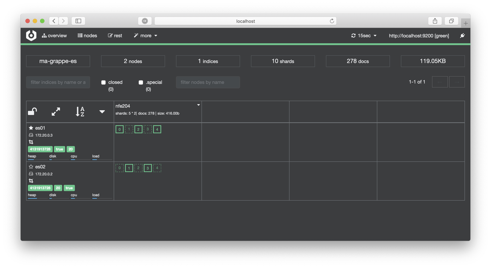
Fig. 73 Un index ElasticSearch avec 5 fragments.¶
Nous avons donc 5 fragments, répliqués chacun une fois, soit 10 fragments au total. Avec deux serveurs, chaque fragment est stocké sur chaque serveur.
Ajout / suppression de nœuds¶
Maintenant, si nous ajoutons des serveurs, ElasticSearch va commencer à distribuer les fragments,
diminuant d’autant la charge individuelle de chaque serveur. Nous reprenons
le fichier dock-comp-es2.yml
que vous pouvez récupérer. Arrêtez l’exécution du docker-compose en cours et
relancez-le
docker-compose -f dock-comp-es2.yml up
Avec trois serveurs, vous devriez obtenir un affichage semblable à celui de la Fig. 74.
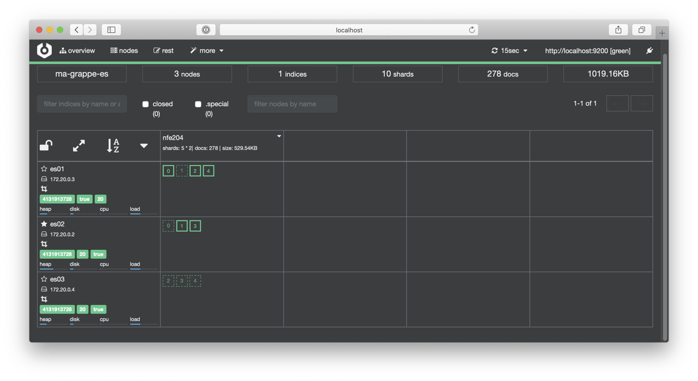
Fig. 74 Distribution des fragments sur les serveurs.¶
On voit maintenant que la notion de « maître » est en fait raffinée dans ElasticSearch au niveau du fragment: chaque nœud est responsable (en tant que primary) d’un sous-ensemble des shards, et est en contact avec les autres nœuds, dont ceux stockant le réplica du fragment primaire. Une requête d’insertion est toujours redirigée vers le serveur stockant le fragment primaire dans lequel le nouveau document doit être placé. Une requête de lecture en revanche peut être satisfaite par n’importe quel nœud d’un cluster ElasticSearch, sans distinction du statut primaire/secondaire des fragments auxquels on accède.
Comment est déterminé le fragment dans lequel un document est placé? ElasticSearch applique
une méthode simple de distribution basée sur une clé (par défaut le champ _id)
et sur le nombre de fragments.
fragment = hash(clé) modulo nb_fragments
La fonction hash() renvoie un entier, qui est divisé par le nombre de fragments. Le reste de cette division donne l’identifiant du fragment-cible. Avec 5 fragments, une clé hachée vers la valeur 8 sera placée dans le fragment 3, une clé hachée vers la valeur 101 sera placée dans le fragment 1, etc.
Important
Cette méthode simple a un inconvénient: si on décide de changer le nombre de fragments, tous les documents doivent être redistribués car le calcul du placement donne des résultats complètement différents. Plus de détails sur cette question dans la section consacrée au partitionnement par hachage.
Dans ElasticSearch, la table de routage est distribuée sur l’ensemble des nœuds qui sont donc chacun en mesure de router les requêtes d’insertion ou de recherche.
Vous pouvez continuer l’expérience en ajoutant d’autres nœuds, en constatant à chaque fois que les fragments (primaires ou réplicas) sont un peu plus distribués sur l’ensemble des ressources disponibles. Inversement, vous pouvez arrêter certains nœuds, et vérifier qu’ElasticSearch re-distribue automatiquement les fragments de manière à préserver le nombre de copies spécifié par la configuration (tant que le nombre de nœuds est au moins égal au nombre de copies).


{kind=link}
{kind=link}
{kind=link}
{kind=link}
Mise en pratique¶
Exercice MEP-S1-1: Créez une collection partitionnée ElasticSearch
Cet exercice consiste simplement à reproduire les commandes données ci-dessus.
Exercice MEP-S1-3: Exploration d’ElasticSearch (atelier optionnel)
La présentation d’ElasticSearch doit être prise comme un point de départ pour l’exploration de ce système. Outre la reproduction des quelques manipulations données dans la section, voici quelques suggestions:
Se pencher sur les questions habituelles: comment équilibrer la charge; comment régler l’équilibre entre asynchronicité des écritures et sécurité; comment est gérée la cohérence transactionnelle. Pour toutes ces questions, des ressources existent sur le Web qu’il faut apprendre à trouver, sélectionner et comprendre.
Pour charger des données en masse, vous pouvez utiliser par exemple https://github.com/sematext/ActionGenerator.
ElasticSearch propose un module original dit de percolation, le principe étant de déposer une requête permanente (ou « continue ») et d’être informé de tout nouveau document satisfaisant cette requête. Permet d’implanter un système de souscription-notification: à explorer.
Kibana est un module analytique associé à ElasticSearch, équipé de très beaux modules de visualisation.
S2: partitionnement par intervalle¶
Supports complémentaires:
L’idée est simple: on considère le domaine de valeur de la clé de partition (par exemple, l’ensemble des entiers) et on le divise en n intervalles définissant n fragments. On suppose que le domaine est muni d’une relation d’ordre total qui sert à affecter sans équivoque un identifiant à un intervalle.
Structures et opérations¶
{kind=link}
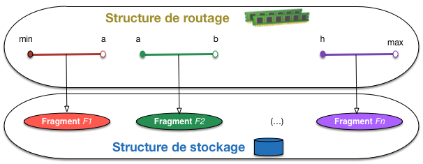
Fig. 75 Partitionnement par intervalle¶
La Fig. 75 montre génériquement une structure de partionnement basée sur des intervalles. Le domaine de la clé est partitionné en intervalles semi-ouverts, dont la liste constitue la structure de routage. À chaque intervalle est associé un fragment dans la structure de stockage.
En pratique, on va déterminer la taille maximale d’un fragment de telle sorte qu’il puisse être lu très rapidement.
dans un système orienté vers le temps réel, la taille d’un fragment est un (petit) multiple de celle d’un secteur sur le disque (512 octets): 4 KO, 8 KO sont des tailles typiques; le but est de pouvoir charger un fragment avec un accès disque et un temps de parcours négligeable, soit environ 10 ms pour le tout;
dans un système orienté vers l’analytique où il est fréquent de parcourir un fragment dans sa totalité, on choisira une taille plus grande pour minimiser le nombre des accès aléatoires au disque.
La structure de routage est constituée de paires (I, a) où I est la description d’un intervalle et a l’adresse du fragment correspondant. Un critère important pour choisir la taille des fragments est de s’assurer que leur nombre reste assez limité pour que la structure de routage tienne en mémoire. Faisons quelques calculs, en supposant une collection de 1 TO, et un taille de 20 octets pour une paire (I, a).
si la taille d’un fragment est de 4 KO (choix typique d’un SGBD relationnel), le routage décrit 250 millions de fragments, soit une taille de 5 GO;
si la taille d’un fragment est de 1 MO, il faudra 1 million de fragments, et seulement 20 MO pour la structure de routage.
Dans les deux cas, le routage tient en mémoire RAM (avec un serveur de capacité raisonnable). Le premier soulève quand même le problème de l’efficacité d’une recherche dans un tableau de 250 millions d’entrées. On peut alors utiliser une structure plus sophistiquée, arborescente, la plus aboutie étant l’arbre B utilisé par tous les systèmes relationnels.
Le tableau des intervalles est donc assez compact pour être placé en mémoire, et chaque fragment est constitué d’un fichier séquentiel sur le disque. Les opérations s’implantent très facilement.
get(i): chercher dans le routage (I, a) tel que I contienne i, charger le fragment dont l’adresse est a, chercher le document en mémoire;
put(i, d): chercher dans le routage (I, a) tel que I contienne i, insérer d dans le fragment dont l’adresse est a;
delete(i): comme la recherche, avec effacement du document trouvé;
range(i, j): chercher tous les intervalles dont l’intersection avec [i, j] est non vide, et parcourir les fragments correspondants.
Dynamicité¶
Comment obtient-on la dynamicité? Et, accessoirement, comment assure-t-on une bonne répartition des documents dans les fragments? La méthode consiste à augmenter le nombre de fragments en fonction de l’évolution de la taille de la collection.
initialement, nous avons un seul fragment, couvrant la totalité du domaine de la clé;
quand ce fragment est plein, on effectue un éclatement (split) en deux parties égales correspondant à deux intervalles distincts;
on répète ce processus chaque fois que l’un des fragments est plein.
L’éclatement d’un fragment se comprend aisément sur la base d’un exemple illustré par la Fig. 76. On suppose ici que le nombre maximal de documents par fragment est de 8 (ce qui est bien entendu très loin de ce qui est réalisable en pratique). Seules les clés sont représentées sur la figure.
{kind=link}
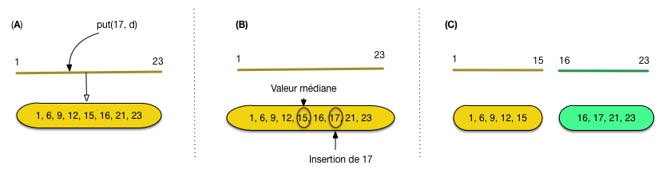
Fig. 76 Eclatement d’un fragment¶
La situation initale (A) montre un unique fragment dont les clés couvrent l’intervalle [1, 23] (notez que le fragment est trié sur la clé). Une opération put(17, d) est soumise pour insérer un document avec l’identifiant 17. On se retrouve dans la situation de la part (B), avec un fragment en sur-capacité (9 documents) qui nécessite donc un éclatement.
Ce dernier s’effectue en prenant la valeur médiane des clés comme pivot de répartition. Tout ce qui se trouve à gauche (au sens large) de la valeur médiane (ici, 15) reste dans le fragment, tout ce qui se trouve à droite (au sens strict) est déplacé dans un nouveau fragment. Il faut donc créer un nouvel intervalle, ce qui nous place dans la situation finale de la partie (C) de la figure.
Cette procédure, très simple, présente de très bonnes propriétés:
il est facile de voir que, par construction, les fragments sont équilibrés par cette répartition en deux parties égales;
l’utilisation de l’espace reste sous contrôle: au minimum la moitié est effectivement utilisée;
la croissance du routage reste faible: un intervalle supplémentaire pour chaque éclatement.
Simplicité, efficacité, robustesse: la procédure de croissance d’un partitionnement par intervalle est à la base de très nombreuses structures d’indexation, en centralisé ou distribué, et entre autres du fameux arbre-B mentionné précédemment.
Un effet indirect de cette méthode est que la collection est totalement ordonnée sur la clé: en interne au niveau de chaque fragment, et par l’ordre défini sur les fragments dans la structure de routage. C’est un facteur supplémentaire d’efficacité. Par exemple, une fois chargé en mémoire, la recherche d’un document dans un fragment peut se faire par dichotomie, avec une convergence très rapide.
Etude de cas: MongoDB¶
Dans MongoDB, le partitionnement est appelé sharding et correspond à quelques détails près à notre présentation générale.
Architecture¶
La Fig. 77 résume l’architecture d’un système MongoDB en action avec réplication et partitionnement. Les nœuds du système peuvent être classés en trois catégories.
les routeurs (processus
mongos) communiquent avec les applications clientes, se chargent de diriger les requêtes vers les serveurs de stockage concernés, et transmettent les résultats;les replica set (processus
mongod) ont déjà été présentés dans le chapitre sysdistr; un replica set est en charge d’un ou plusieurs fragments (shards) et gère localement la reprise sur panne par réplication;enfin un replica set dit « de configuration » est spécialement chargé de gérer les informations de routage. Il est constitué de config servers (processus
mongodavec optioncongifsrv) qui stockent généralement la configuration complète du système: liste des replica sets (avec, pour chacun, le maître et les esclaves), liste des fragments et allocation des fragments à chaque replica set.
Les données des serveurs de configuration sont maintenues cohérentes par des protocoles transactionnels stricts. C’est ce qui permet d’avoir plusieurs routeurs: si l’un des routeurs décide d’un éclatement, la nouvelle configuration sera reportée dans les serveurs de configuration et immédiatement visible par tous les autres routeurs.
{kind=link}
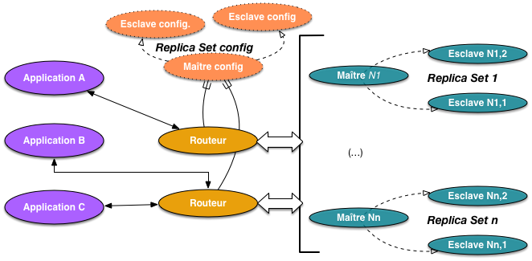
Fig. 77 Architecture de MongoDB avec partitionnement¶
La scalabilité est apportée à deux niveaux. D’une part, la présence de plusieurs routeurs est destinée à équilibrer la charge de la communication avec les applications clientes; d’autre part, le partitionnement permet de répartir la charge de traitement des données elles-mêmes (en lecture et en écriture). En particulier, le partitionnement favorise la présence des données en mémoire RAM, constituant ainsi une sorte de serveur de données virtuel doté d’une très grande mémoire principale. Idéalement, la taille de la grappe est telle que tous les documents « utiles » (soit, informellement, ceux utilisés couramment par les applications, par opposition aux documents auxquels on accède rarement) sont distribués dans la mémoire RAM de l’ensemble des serveurs.
Dans MongoDB le routage est basé (par défaut) sur un partitionnement par intervalles. Le domaine des identifiants de chaque collection est divisé par des éclatements successifs, associant à chaque fragment un intervalle de valeurs (voir les sections précédentes). La liste de tous les fragments et de leurs intervalles est maintenue par les serveurs de configuration (qui fonctionnent en mode répliqué pour éviter la perte irrémédiable de ces données en cas de panne).
Note
Depuis la version 2.4, MongoDB propose également un partitionnement par hachage.
Chaque serveur gère un ou plusieurs fragments, et l’équilibrage du stockage se fait, après un éclatement, par déplacement de certains fragments. La Fig. 78 illustre le mécanisme avec un exemple simple. Initialement, nous avons deux serveurs stockant respectivement 2 fragments (F et G) et un (H). F est plein et MongoDB décide un éclatement produisant deux fragments F1 et F2, qui restent sur le même serveur.
Le processus d’équilibrage entre alors en jeu et détecte que la différence de charge entre le serveur \(N_i\) et le serveur \(N_j\) dépasse un certain seuil. Une migration de certains fragments (ici le fragment F2) est alors décidée pour aboutir à une meilleure répartition des données. Tout changement affectant un fragment (éclatement, déplacement) est immédiatement transmis aux serveurs de configuration.
{kind=link}
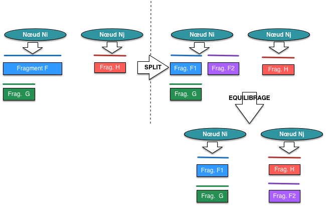
Fig. 78 Gestion des fragments après partitionnement.¶
La taille par défaut d’un fragment est de 64 MO. On peut donc avoir des centaines de fragments sur un même serveur. Cette granularité assez fine permet de bien équilibrer le stockage sur les différents serveurs.
Passons à la pratique. Comme d’habitude, nous utilisons Docker, en fixant la version de MongoDB pour ne pas être dépendant des changements dans les options de paramétrages apportés au fil des changements de version. Nous allons nous contenter du minimum pour mettre en place un partitionnement: un serveur de configuration, un routeur et deux serveurs de fragments chargés du stockage.
Note
Cette configuration n’est pas du tout robuste aux pannes et ne devrait pas être utilisée en production.
Configuration du système¶
Commençons par le serveur de configuration. C’est un nœud mongod
dont la charge de travail est essentielle mais quantitativement minimale:
il doit conserver la configuration du système distribué et la commmuniquer
aux routeurs.
Voici la commande de lancement avec Docker.
docker run -d --name configsvr --net host mongo:3.2 \
mongod --configsvr --replSet config-rs --port 29999
Les options:
-dpour lancer le processus en tâche de fond (pas obligatoire).
--namepour donner un nom au conteneur.
--net hostpour placer le conteneur dans l’espace réseau de la machine-hôte (on peut aussi sans doute rediriger le port par défaut de MongoDB, 27017).
--configsvrpour spécifier qu’il s’agit d’un serveur de configuration.Enfin, le serveur est en écoute sur le port 29999.
Le serveur de configuration doit faire partie d’un replica set, en l’occurrence réduit à lui-même. Il faut
quand même indiquer l’option --replSet au lancement, et initialiser le replica set
en se connectant avec un client sur le port 29999
et en exécutant la commande déjà connue:
rs.initiate()
Ouf. Notre server de configuration est prêt, il est lui-même le PRIMARY (à vérifier
avec rs.status().
On continue avec le routeur, un processus mongos qui doit communiquer avec
le serveur de configuration. On le lance sur le port 30000.
Note
Vous choisissez bien entendu les numéros de port comme vous l’entendez, l’essentiel étant qu’ils n’entrent pas en conflit avec des serveurs existant.
docker run -d --name router --net host mongo:3.2 mongos --port 30000 \
--configdb config-rs/$(hostname):29999
L’option --configdb indique au routeur quel est le replica set en charge
des données de configuration. Notez qu’il faut spécifier le nom du replica set
et l’un de nœuds (ici, notre serveur précédent, celui qui est en écoute sur le port 29999).
Tout le monde suit? Sinon relisez la partie sur l’architecture, ci-dessus.
Et finalement, lançons nos deux serveurs de stockage (qui devraient être, dans un système en production, des replica sets constitués de 3 nœuds).
docker run -d --name mongo1 --net host mongo:3.2 mongod --shardsvr --replSet rs1 --port 30001
docker run -d --name mongo2 --net host mongo:3.2 mongod --shardsvr --replSet rs2 --port 30002
Pour chacun, on utilise les options:
--shardsvrpour spécifier qu’il s’agit d’un serveur de stockage de fragments.
--replSetpour donner un nom au replica set.et bien sûr, on les lance sur des ports dédiés dans le réseau de la machine hôte.
Pour chacun, il faut également intitialiser le replica set en se connectant aux ports 30001 et 30002 avec un client et en lançant:
rs.initiate()
Notre système minimal est en place. Encore une fois, en production, il faudrait utiliser plusieurs serveurs pour chaque replica set, mais pas forcément un serveur par nœud. Reportez-vous à la documentation MongoDB ou à des experts si vous êtes un jour confrontés à cette tâche.
La commande docker ps, ou l’affichage de Kitematic, devrait vous donner la liste de vos
quatre conteneurs. Jetez un œil à la sortie console (c’est très facile avec Kitematic) pour
vérifier qu’il n’y a pas de message d’erreur.
Il reste à déclarer quels sont les serveurs de fragments. Cette déclaration se
fait en se connectant au routeur, sur le port 30000 dans notre configuration.
Une fois connecté au routeur, la commande sh.addShard() ajoute un
replica set de fragments.
Voici donc les commandes, à effectuer avec un client connecté au port 30000 de la machine Docker.
sh.addShard("rs1/<votremachine>:30001")
sh.addShard("rs2/<votremachine>:30002")
Note
Bien entendu votremachine dans la commande précédente désigne l’IP ou le nom de votre ordinateur.
Votre configuration est terminée. La commande sh.status() devrait vous donner
des informations sur le statut de votre système distribué. Vous devriez notamment obtenir
la liste des replica sets.
{"shards": [
{ "_id" : "rs1", "host" : "rs1/192.168.99.100:30001" },
{ "_id" : "rs2", "host" : "rs2/192.168.99.100:30002" }
]
}
Si quelques chose ne marche pas, c’est très probablement que vous avez fait une erreur quelque part. J’ai testé et retesté les commandes qui précèdent mais, bien entendu, votre environnement est sans doute différent. C’est une bonne opportunité pour essayer de comprendre ce qui ne va pas, et du coup (une fois les problèmes résolus) pour approfondir la compréhension des différentes commandes.
Partitionnement des collections¶
Nous avons maintenant un cluster MongoDB prêt à partitionner des collections. Ce partitionnement n’est pas obligatoire: une base est souvent constituée de petites collections pour lesquelles un partitionnement est inutile, et d’une très grosse collection laquelle cela vaut au contraire la peine.
Dans
MongoDB, c’est au niveau de la collection que l’on choisit ou non de partitionner. Par défaut,
une collection reste stockée dans un seul fragment sur un seul serveur. Pour qu’une
collection puisse être partitionnée, il faut que la base de données qui la contient
l’autorise (oui, c’est un peu compliqué…). Autorisons donc la base nfe204 à contenir
des collections partitionnées.
mongos> sh.enableSharding("nfe204")
Nous sommes enfin prêts à passer à l’échelle pour les collections de la base nfe204. Pour vérifier
où vous en êtes, les commandes suivantes sont instructives (toujours avec un client connecté au
routeur sur le port 27017).
db.adminCommand( { listShards: 1 } )
sh.status()
db.stats()
db.printShardingStatus()
À vous d’interpréter toutes les informations données.
Nous allons finalement partitionner la collection movies avec la commande shardCollection().
La question essentielle à se
poser est celle de la clé de partitionnement. Par défaut c’est l’identifiant du document
qui est choisi, ce qui garantit que le système pourra distinguer les documents individuellement
et sera donc en mesure de gérer finement la distribution.
Important
Dans un partitionnement par intervalle, utiliser une clé dont la valeur croît de manière monotone présente un inconvénient fort: toutes les insertions se font dans le dernier fragment créé. Pour des écritures intensives, c’est un problème car cela revient à surcharger le serveur qui stocke ce fragment. Dans ce cas il vaut mieux utiliser le partitionnement par hachage.
Il faut être bien conscient que la clé de partitionnement sert aussi de clé de recherche. Une recherche donnant comme critère la valeur de la clé sera routée directement vers le serveur contenant le fragment stockant le document. Toute recherche portant sur d’autres critères se fera par parcours séquentiel sur l’ensemble des nœuds.
Voici la commande pour partitionner sur l’identifiant:
sh.shardCollection("nfe204.movies", { "_id": 1 } )
On peut aussi utiliser un ou plusieurs attributs des documents, par exemple le titre en priorité, et l’année pour distinguer deux films ayant le même titre.
sh.shardCollection("nfe204.movies", { "title": 1, "year": 1} )
Avec le second choix, on aura donc des recherches sur le titre ou la combinaison (titre, année) très rapides (mais pas sur l’année toute seule!). En revanche une recherche sur l’identifiant se fera par parcours séquentiel généralisé, sauf à créer des index secondaires sur les serveurs de fragment. Bref, il faut bien réfléchir aux besoins de l’application avant de choisir la clé, qui ne peut être changée à postériori. La documentation de MongoDB est assez détaillée sur ce point.
Pour constater l’effet du partitionnement, il nous faut une base d’une taille suffisante pour créer plusieurs fragments et déclencher l’équilibrage sur nos deux serveurs. Le plus simple est d’utiliser un générateur de données: ipsum est un utilitaire écrit en Python est spécifiquement conçu pour MongoDB. J’ai fait quelques adaptations pour que cela fonctionne en python3, et je vous invite donc à récupérer l’archive suivante:
Note
Vous devez installer l’extension pymongo de Python
pour vous connecter à MongoDB. En principe c’est aussi simple
que pip install pymongo, mais si ça ne marche pas
reportez-vous à http://api.mongodb.org/python.
Décompressez l’archive ZIP.
Ipsum produit des documents JSON conformes à un schéma (http://json-schema.org).
Pour notre base movies, nous utilisons le
schéma JSON des documents
qui est déjà placé avec les fichiers ipsum.
La commande suivante (il faut se placer dans le répertoire ipsum-master)
charge 100 000 pseudo-films dans la collection movies.
python ./pymonipsum.py --host <votremachine> -d nfe204 -c movies --count 1000000 movies.jsch
Cela peut prendre un certain temps… Pendant l’attente occupez-vous en consultant les messages apparaissant à la console pour le routeur et les deux serveurs de fragments (le serveur de configuration est moins bavard) et essayez de comprendre ce qui se passe.
Avec l’interpréteur mongo, on peut aussi surveiller l’évolution du nombre de documents
dans la base.
mongos> db.movies.count()
Essayez d’ailleurs la même chose en vous connectant à l’un des serveurs de fragments.
mongo nfe204 --port 30001
mongo> db.movies.count()
Qu’en dites-vous ? Pendant le chargement, et à la fin de celui-ci, vous pouvez inspecter le statut du partitionnement avec les commandes données précédemment. Tout y est, et c’est relativement clair!
Mise en pratique¶
Exercice MEP-S2-1: Créer une collection partitionnée
Cet exercice consiste simplement à reproduire les commandes données
ci-dessus pour partitionner une collection movies dans laquelle
on insère quelques milliers de pseudo-documents. Si vous êtes en groupe
et disposez de plusieurs serveurs, n’hésitez pas à faire du vrai distribué.
Exercice MEP-S2-2: pour aller plus loin (atelier optionnel)
Cet exercice consiste simplement à reproduire les commandes données
ci-dessus pour partitionner une collection movies dans laquelle
on insère quelques milliers de pseudo-documents. Si vous êtes en groupe
et disposez de plusieurs serveurs, n’hésitez pas à faire du vrai distribué.
Vous pouvez tenter ensuite quelques variantes et compléments.
Définissez comme clé de partitionnement le titre, puis le genre du film, que constate-t-on?
Créez une collection avec quelques millions de films; effectuez quelques requêtes, sur la clé, puis sur un autre attribut. Conclusion? Comment faire pour obtenir de bonnes performances dans le second cas?
Essayez d’insérer dans une collection partitionnée en vous adressant directement à l’un des serveurs de stockage.
Accédez à la base
configavecuse config; regardez les collections de cette base: ce sont les méta-données qui décrivent l’ensemble du système distribué. Vous pouvez interroger ces collections pour comprendre en quoi consistent ces méta-données.
S3: partitionnement par hachage¶
Supports complémentaires:
Le partitionnement par hachage en distribué repose globalement sur la même organisation que pour le partitionnement par intervalle. Un routeur maintient une structure qui guide l’affectation des documents aux serveurs de stockage, chaque serveur étant localement en charge de gérer le fragment qui lui est alloué. Cette structure au niveau du routage est la table de hachage établissant une correspondance entre les valeurs des clés et les adresses des fragments.
La difficulté du hachage est la dynamicité: ajout, suppression de serveur, évolution de la taille de la collection gérée.
Structure et opérations¶
L’idée de base est de disposer d’une table de correspondance (dite table de hachage) entre une suite d’entiers [1, n] et les adresses des n fragments, et de définir une fonction h (dite fonction de chachage) associant toute valeur d’identifiant à un entier compris entre 1 et n. La fonction de hachage est en principe extrêmement rapide; associée à une recherche efficace dans la table de hachage, elle permet de trouver directement le fragment correspondant à une clé.
La structure de routage comprend la table de hachage et la fonction h(). Pour éviter d’entrer dans des détails compliqués, on va supposer pour l’instant que h() est le reste de la division par n, le nombre de fragments (fonction modulo de n) et que chaque identifiant est un entier. Il est assez facile en pratique de se ramener à cette situation, en prenant quelques précautions pour la fonction soit équitablement distribuée sur [0, n-1].
Note
Si on prend la fonction modulo, le domaine d’arrivée est [0, n-1] et pas [1, n], ce qui ne change rien dans le principe.
{kind=link}
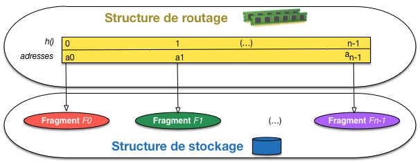
Fig. 79 Partitionnement par hachage¶
En se basant sur l’illustration de la Fig. 79, on voit que tous les documents dont l’identifiant est de la forme \(n \times k + r\), où k est un entier, seront stockés dans le fragment \(F_r\). Le fragment \(F_1\) par exemple contient les documents d’identifiant 1, n+1, 2n+ 1, etc.
La table de routage contient des entrées \([i, a_i]\), où \(i \in [0,n-1]\), et \(a_i\) est l’adresse du fragment \(F_i\). En ce qui concerne sa taille, le même raisonnement s’applique que dans le cas des intervalles: elle est proportionnelle au nombre de fragments, et tient en mémoire même pour des collections extrêmement grandes.
Les opérations s’implantent de la manière suivante:
get(i): calculer \(r = h(i)\), et accéder au fragment dont l’adresse est \(a_r\), chercher le document en mémoire;
put(i, d): calculer \(r = h(i)\), insérer d dans le fragment dont l’adresse est \(a_r\);
delete(i): comme la recherche, avec effacement du document trouvé;
range(i, j): pas possible avec une structure par hachage, il faut faire un parcours séquentiel complet.
Le hachage ne permet pas les recherches par intervalle, ce qui peut être contrariant. En contepartie, la distribution des documents ne dépend pas de la valeur directe de la clé, mais de la valeur de hachage, ce qui garantit une distribution uniforme sans phénomène de regroupement des documents dont les valeurs de clé sont proches. Un tel phénomène peut être intempestif ou souhaitable selon l’application.
Dynamicité¶
C’est ici que les choses se compliquent. Contrairement aux structures basées sur le tri qui disposent de la méthode de partitionnement pour évoluer gracieusement avec la collection indexée, le hachage (dans la version basique présentée ci-dessus) a un caractère monolithique qui le rend impropre à l’ajout ou à la suppression de fragments.
Tout repose en effet sur l’hypothèse que la fonction h() est immuable. Un simple contre-exemple suffit pour s’en convaincre. Supposons un flux continu d’insertion et de recherche de documents, parmi lesquelles l’insertion, suivi de la recherche de l’identifiant 17. Pour être totalement concret, on va prendre, initialement, un nombre de fragments n=5.
quand on effectue put(17, d), la fonction de hachage affecte d au fragment \(F_2\) (tout le monde suit?) ;
les insertions continuent, jusqu’à la nécessité d’ajouter un sixième fragment: la fonction de hachage n’est plus \(\mod 5\) mais \(\mod 6\).
je veux effectuer une recherche get(17), mais la nouvelle fonction de hachage m’envoie vers le fragment \(F_5\) (vous voyez pourquoi?) qui ne contient pas le document recherché.
Un peu de réflexion (en fait, beaucoup de gens très intelligents y ont longuement réfléchi) suffit pour réaliser qu’il n’existe pas de solution simple au problème de l’évolution d’une structure de hachage. Des méthodes sophistiquées ont été proposées, la plus élégante et efficace étant le hachage linéaire (W. Litwin) dont la présentation dépasse le cadre de ce document.
Note
Reportez-vous au cours http://sys.bdpedia.fr, au livre http://webdam.inria.fr/Jorge/ ou à toute autre source bien informée pour tout savoir sur le hachage dynamique en général, linéaire en particulier.
Voyons dans le cadre d’un système distribué comment appliquer le principe du hachage avec dynamicité.
Le hachage cohérent (consistent hashing)¶
Le hachage repose donc sur une fonction h() qui distribue les valeurs de clé vers un intervalle [0, n-1], n correspondant au nombre de fragments. Toute modification de cette fonction rend invalide la distribution existante, et on se trouve donc à priori dans la situation douloureuse de conserver ad vitam le nombre de fragments initial, ou d’accepter périodiquement des réorganisation entière du partitionnement.
Le hachage cohérent propose une solution qui évite ces deux écueils en maintenant toujours la même fonction tout en adaptant la régle d’affectation d’un document à un serveur selon l’évolution (ajout / suppression) de la grappe. Cette règle d’affectation maintient la cohérence globale du partitionnement déjà effectué, d’où le nom de la méthode, et surtout son intérêt.
L’anneau et la règle d’affectation¶
Le principe du hachage cohérent est de considérer dès le départ un intervalle immuable D = [0, n-1] pour le domaine d’arrivée de la fonction de hachage, où n est choisi assez grand pour réduire le nombre de collisions (une collision, quand on parle de hachage, correspond à deux valeurs de clé distinctes \(i_1\) et \(i_2\) telles que \(h(i_1)=h(i_2)\)). On choisit typiquement \(n = 2^{32}\) ou \(n = 2^{64}\), ce qui permet de représenter la table de hachage avec un indice stocké sur 4 ou 8 octets.
On interprète ce domaine comme un anneau parcouru dans le sens des aiguilles d’une montre, de telle sorte que le successeur de \(2^{64}-1\) est 0. La fonction de hachage associe donc chaque serveur de la grappe à une position sur l’anneau; on peut par exemple prendre l’adresse IP d’un serveur, la convertir en entier et appliquer \(f(ip) = ip \mod 2^{64}\), ou tout autre transformation vers D suffisamment distributive.
{kind=link}
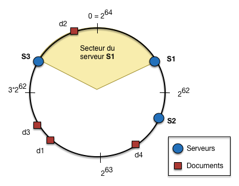
Fig. 80 L’anneau du hachage cohérent et la règle d’affectation¶
On peut observer que le placement des serveurs sur l’anneau découpe ce dernier en arcs de cercle (Fig. 80). La règle d’affectation est alors définie de la manière suivante: chaque serveur est en charge de l’arc de cercle qui le précède sur l’anneau. Si on regarde plus précisément la Fig. 80:
le serveur \(S_1\) est positionné par la fonction de hachage en \(h(S_1)=a\), a étant quelque part entre 0 et \(2^{62}\);
le serveur \(S_2\) est positionné par la fonction de hachage en \(h(S_2)=b\), quelque part entre \(2^{62}\) et \(2^{63}\);
le serveur \(S_3\) est positionné par la fonction de hachage en \(h(S_3)=c\), quelque part entre \(3 \times 2^{62}\) et \(2^{64}-1\).
\(S_1\) est donc responsable de l’arc qui le précède, jusqu’à la position de \(S_3\) (non comprise). Maintenant, les documents sont eux aussi positionnés sur cet anneau par une fonction de hachage ayant le même domaine d’arrivée que h(). La règle d’affectation s’ensuit: chaque serveur doit stocker le fragment de la collection correspondant aux objets positionnés sur l’arc de cercle dont il est responsable.
Note
On pourrait bien entendu également adopter la convention qu’un serveur est responsable de l’arc de cercle suivant sa position sur l’anneau (au lieu du précédent). Cela ne change évidemment rien au principe.
Sur la figure, \(S_1\) stockera donc D2, \(S_3\) stockera d1, d3, d4 et \(S_2\) ne stockera (pour l’instant) rien du tout.
En pratique¶
La table de hachage est un peu particulière: elle établit une correspondance entre le découpage de l’anneau en arcs de cercle, et l’association de chaque arc à un serveur. Toujours en notant a, b et c les positions respectives de nos trois serveurs, on obtient la table suivante.
h(i) |
Serveur |
|---|---|
]c, a] |
S1 |
]a, b] |
S2 |
]b, c] |
S3 |
Le fait de représenter des intervalles au lieu de valeurs ponctuelles est la clé pour limiter la taille de la table de hachage (qui contient virtuellement \(2^{64}\) positions).
Un premier problème pratique apparaît immédiatement: les positions des serveurs étant déterminées par la fonction de hachage indépendamment de la distribution des données, certains serveurs se voient affecter un tout petit secteur, et d’autres un très grand. C’est flagrant sur notre Fig. 80 où le déséquilibre entre \(S_2\) et \(S_3\) est très accentué, au bénéfice (ou au détriment…) de ce dernier.
La solution est d’affecter à chaque serveur non pas en une, mais en plusieurs positions sur l’anneau, ce qui tend à multiplier les arcs de cercles et, par un effet d’uniformisation, de rendre leurs tailles comparables. L’effet est illustré avec un nombre très faible de positions (3 pour chaque serveur) sur la Fig. 81. L’anneau est maintenant découpé en 9 arcs de cercles et les tailles tendent à s’égaliser.
{kind=link}
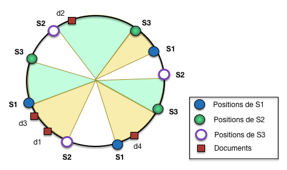
Fig. 81 Positions multiples de chaque serveur sur l’anneau¶
En pratique, on peut distribuer un même serveur sur plusieurs dizaines de positions (128, 256, typiquement) pour garantir cet effet de lissage. Cela a également pour impact d’agrandir la taille de la table de routage. Celle donnée ci-dessous correspond à l’état de la Fig. 81, où a1, a2 et a3 représentent les positions de \(S_1\), et ainsi de suite.
h(i) |
Serveur |
|---|---|
]c1, a1] |
S1 |
]a1, b1] |
S2 |
]b1, c2] |
S3 |
]c2, a2] |
S1 |
]a2, b2] |
S2 |
]b2, a3] |
S1 |
]a3, c3] |
S3 |
]c3, b3] |
S2 |
]b3, c1] |
S3 |
La taille de la table de routage peut éventuellement devenir un souci, surtout en cas de modifications fréquentes (ajout ou suppression de serveur). C’est surtout valable pour des réseaux de type pair-à-pair, beaucoup moins pour des grappes de serveurs d’entreprises, beaucoup plus stables. Des solutions existent pour diminuer la taille de la table de hachage, avec un routage des requêtes un peu plus compliqué. Le plus connu est sans doute le protocole Chord; vous pouvez aussi vous reporter à http://webdam.inria.fr/Jorge/.
Ajout/suppression de serveurs¶
L’ajout d’un nouveau serveur ne nécessite que des adaptations locales de la structure de hachage, contrairement à une approche basée sur le changement de la fonction de hachage, qui implique une recontruction complète de la structure. Quand un nouveau serveur est ajouté, ses nouvelles positions sont calculées, et chaque insertion à une position implique une division d’un arc de cercle existant. La Fig. 82 montre la situation avec une seule position par serveur pour plus de clarté.
{kind=link}
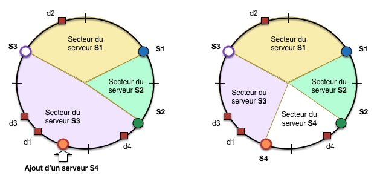
Fig. 82 Ajout d’un nouveau serveur¶
Un serveur \(S_4\) est ajouté (partie gauche de la figure) dans un arc de cercle existant, celui associé jusqu’à présent au serveur \(S_3\). Une partie des documents gérés par ce dernier (ici, d4) doit donc migrer sur le nouveau serveur. C’est assez comparable avec l’éclatement d’un partitionnement par intervalle, la principale différence avec le hachage étant que, le positionnement résultant d’un calcul, il n’y a aucune garantie que le fragment existant soit divisé équitablement. Statistiquement, la multiplication des serveurs et surtout de leurs positions doit aboutir à un partitionnement équitable.
Note
Notez au passage que plus un arc est grand, plus il a de chance d’être divisé par l’ajout d’un nouveau serveur, ce qui soulage d’autant le serveur en charge du fragment initial. C’est la même constatation qui pousse à multiplier le nombre de positions pour un même serveur.
Cassandra en mode distribué¶
Ressources complémentaires
Sur le Hash Ring de Cassandra, un document concis et assez précis, http://salsahpc.indiana.edu/b534projects/sites/default/files/public/1_Cassandra_Gala,%20Dhairya%20Mahendra.pdf
L’architecture distribuée de Cassandra est basée sur le consistent hashing, et fortement inspirée de la conception du système Dynamo.
Note
Cette partie s’appuie largement sur une contribution de Guillaume Payen, issue de son projet NFE204. Merci à lui!
Le Hash-Ring¶
Les nœuds sont donc affectés à un anneau directionnel, ou Hash Ring couvrant les valeurs \([-2^{63}, 2^{63}]\). Lorsque l’on ajoute un nouveau nœud dans le cluster, ce dernier vient s’ajouter à l’anneau. C’est notamment à partir de cette caractéristique qu’une phrase est souvent reprise dans la littérature lorsqu’il s’agit de faire de la réplication avec Cassandra : Just add a node ! Rien de nouveau ici: c’est l’architecture présentée initialement par le système Dynamo (Amazon).
Chaque nœud n est positionné sur l’anneau à un emplacement (ou token) qui peut être obtenu de deux manières:
Soit, explicitement, par l’administrateur du système. Cette méthode peut être utile quand on veut contrôler le positionnement des serveurs parce qu’ils diffèrent en capacité. On placera par exemple un serveur peu puissant de manière à ce que l’intervalle dont il est responsable soit plus petit que ceux des autres serveurs.
Soit en laissant Cassandra appliquer la fonction de hachage (par défaut, un algorithme nommé MurMur3, plusieurs autres choix sont possibles).
Le serveur n obtient un token \(t_n\). Il devient alors responsable de l’intervalle de valeurs de hachage sur l’anneau \(]t_{n-1}, t_n]\). Au moment d’une insertion, la fonction de hachage est appliquée à la clé primaire de la ligne, et le résultat détermine le serveur sur lequel la ligne est insérée.
{kind=link}
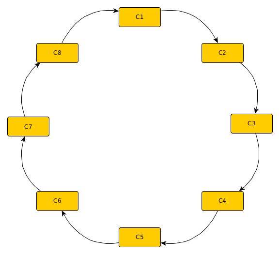
Fig. 83 Représentation d’un cluster Cassandra avec le Hash Ring¶
Pour chaque nœud physique, il est possible d’obtenir plusieurs positions sur l’anneau (principe
des nœuds dits « virtuels »), et donc plusieurs intervalles dont le nœud (physique) est responsable.
La configuration du nombre de nœuds virtuels est donnée par le paramètre num_token du
fichier de configuration cassandra.yaml.
Certains nœuds jouent le rôle de points d’entrée dans l’anneau, et sont nommés seed (« graine », « semence ») dans Cassandra. En revanche, tous les nœuds peuvent répondre à des requêtes des applications clients. La table de routage est en effet dupliquée sur tous les nœuds, ce qui permet donc à chaque nœud de rediriger directement toute requête vers le nœud capable de répondre à cette requête. Pour cela, les nœuds d’une grappe Cassandra sont en intercommunication permanente, afin de détecter les ajouts ou départs (pannes) et les refléter dans leur version de la table de routage stockée localement.
Routage des requêtes¶
Un cluster Cassandra fonctionne en mode multi-nœuds. La notion de nœud maître et nœud esclave n’existe donc pas. Chaque nœud du cluster a le même rôle et la même importance, et jouit donc de la capacité de lecture et d’écriture dans le cluster. Un nœud ne sera donc jamais préféré à un autre pour être interrogé par le client.
Pour que ce système fonctionne, chaque nœud du cluster a la connaissance de la topologie de l’anneau. Chaque nœud sait donc où sont les autres nœuds, quels sont leurs identifiants, quels nœuds sont disponibles et lesquels ne le sont pas.
Un client qui interroge Cassandra contacte un nœud au hasard parmi tous les nœuds du cluster. Le partitionnement implique que tous les nœuds ne possèdent pas localement l’information recherchée. Cependant, tous les nœuds sont capables de dire quel est le nœud du cluster qui possède la ressource recherchée.
Note
Le rôle du coordinateur est donc dans ce cas légèrement différent de ce que nous avons présenté dans le chapitre précédent. Au lieu de se charger lui-même d’une écriture locale, puis de transmettre des demandes de réplication, le coordinateur envoie f demandes d’écriture en parallèle à f nœuds de l’anneau, où f est le facteur de réplication.
Stratégies de réplication¶
Cassandra peut tenir compte de la topologie du cluster pour gérer les réplications. Avec la stratégie simple, tout part de l’anneau. Considérons un cluster composé de 8 nœuds, c1 à c8, et un facteur de réplication de 3. Comme expliqué précédemment, n’importe quel nœud peut recevoir la requête du client. Ce nœud, que l’on nommera coordinateur va prendre en compte
la méthode de hachage,
les token range (intervalles représentant les arcs de cercle affectés à chaque serveur) des nœuds du cluster
la clé du document inséré
pour décider quel sera le nœud dans lequel ce dernier sera stocké. Le coordinateur va alors rediriger la requête pour une écriture sur le nœud choisi par la fonction de hachage. Comme le facteur de réplication est de 3, le coordinateur va aussi rediriger la requête d’écriture vers les 2 nœuds suivant le nœud choisi, dans le sens de l’anneau.
{kind=link}
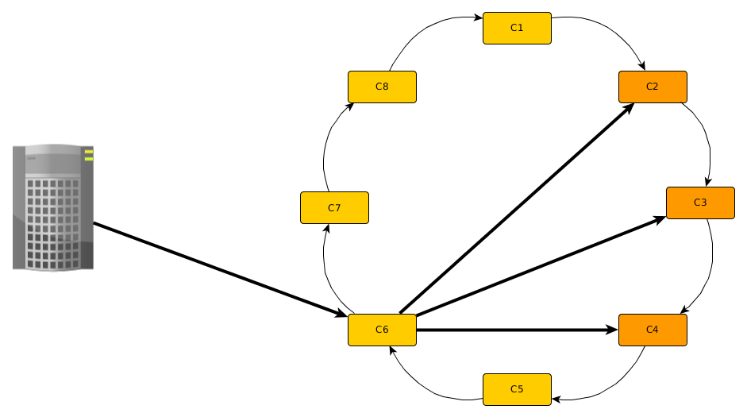
Fig. 84 Stratégie de réplication simple¶
Comme on le voit dans la Fig. 84, lorsque le client effectue la requête sur le cluster, c’est le nœud c6 auquel le client s’est adressé pour traiter la demande. Ce dernier calcule que c’est le nœud c2 qui doit être sollicité pour traiter la requête. Il va donc rediriger la requête vers c2, mais également vers c3 et c4. Ce schéma vaut aussi bien pour la lecture que pour l’écriture.
La stratégie par topologie du réseau présente un intérêt lorsque l’infrastructure est répartie sur différents clusters. Ces derniers peuvent être éloignés physiquement, ou dans le même local. Avec cette stratégie, Cassandra adopte (par défaut) les principes suivants:
les données sont répliquées dans le même data center, pour éviter le coût réseau des transferts d’un centre à un autre
la réplication se fait sur des serveurs situés dans des baies distinctes, car deux serveurs d’une même baie ont plus de chance d’être indisponibles ensemble en cas de panne réseau affectant la baie.
Cette stratégie est intéressante pour des ressources localisées dans différents endroits du monde. L’architecture est toujours celle d’un anneau directionnel, chaque nœud étant lié au nœud suivant. L’écriture d’un document va se faire de la manière suivante:
on détermine le nœud \(N\) en charge du secteur contenant la valeur hachée de la clé
on parcourt ensuite l’anneau jusqu’à trouver situés dans le même centre de données que N, sur lequels on effectue alors la réplication.
N définit donc le centre de données dans lequel le document sera inséré.
Mise en pratique¶
Voici un exemple de mise en pratique pour tester le fonctionnement d’un cluster Cassandra et quelques options. Pour aller plus lon, vous pouvez recourir à l’un des tutoriaux de Datastax, par exemple http://docs.datastax.com/en/cql/3.3/cql/cql_using/useTracing.html pour inspecter le fonctionnement des niveaux de cohérence.
Notre cluster¶
Créons maintenant un cluster Cassandra, avec 5 nœuds. Pour cela, nous créons un premier nœud qui nous servira de point d’accès (seed dans la terminologie Cassandra) pour en ajouter d’autres.
docker run -d -e "CASSANDRA_TOKEN=1" \
--name cass1 -p 3000:9042 spotify/cassandra:cluster
Notez que nous indiquons explicitement le placement du serveur sur l’anneau. En production, il est préférable de recourir aux nœuds virtuels, comme expliqué précédemment. Cela demande un peu de configuration, et nous allons nous contenter d’une exploration simple ici.
Il nous faut l’adresse IP de ce premier serveur. La commande suivant extrait l’information
NetworkSettings.IPAddress du document JSON renvoyé par l’instruction inspect.
docker inspect -f '{{.NetworkSettings.IPAddress}}' cass1
Vous obtenez une adresse. Par la suite on supppose qu’elle vaut 172.17.0.2.
Créons les autres serveurs, en indiquant le premier comme serveur-seed.
docker run -d -e "CASSANDRA_TOKEN=10" -e "CASSANDRA_SEEDS=172.17.0.2" \
--name cass2 spotify/cassandra:cluster
docker run -d -e "CASSANDRA_TOKEN=100" -e "CASSANDRA_SEEDS=172.17.0.2" \
--name cass3 spotify/cassandra:cluster
docker run -d -e "CASSANDRA_TOKEN=1000" -e "CASSANDRA_SEEDS=172.17.0.2" \
--name cass4 spotify/cassandra:cluster
docker run -d -e "CASSANDRA_TOKEN=10000" -e "CASSANDRA_SEEDS=172.17.0.2" \
--name cass5 spotify/cassandra:cluster
Nous venons de créer un cluster de 5 nœuds Cassandra, qui tournent tous en tâche de fond grâce à Docker.
Keyspace et données¶
Insérons maintenant des données. Vous pouvez utiliser le client DevCenter. À l’usage, il est peut être plus rapide de lancer directement l’interpréteur de commandes sur l’un des nœuds avec la commande:
docker exec -it cass1 /bin/bash
[docker]$ cqlsh 172.17.0.X
Créez un keyspace.
CREATE keyspace repli
with replication = {'class':'SimpleStrategy', 'replication_factor':3};
USE repli;
Insérons un document.
CREATE TABLE data (id int, value text, PRIMARY KEY (id));
INSERT INTO data (id, value) VALUES (10, 'Premier document');
Nous venons de créer un keyspace, qui va répliquer les données sur 3 nœuds. La table data va utiliser la clé primaire id et la fonction de hashage du partitioner pour stocker le document dans l’un des 5 nœuds, puis répliquer dans les 2 nœuds suivants sur l’anneau. Il est possible d’obtenir avec la fonction token() la valeur de hachage pour la clé des documents.
select token(id), id from data;
Vérifions avec l’utilitaire nodetool que le cluster est bien composé de 5 nœuds, et regardons comment chaque nœud a été réparti sur l’anneau. On s’attend à ce que les nœuds soient placés par ordre croissant de leur identifiant.
docker exec -it cass1 /bin/bash
[docker]$ /usr/bin/nodetool ring
Testons que le document inséré précedemment a bien été répliqué sur 2 nœuds.
docker exec -it cass1 /bin/bash
[docker]$ /usr/bin/nodetool cfstats -h 172.17.0.2 repli
Regardez pour chaque nœud la valeur de Write Count. Elle devrait être à 1 pour 3 nœuds consécutifs sur l’anneau, et 0 pour les autres. Vérifions maintenant qu’en se connectant à un nœud qui ne contient pas le document, on peut tout de même y accéder. Considérons par exemple que le nœud cass1 ne contient pas le document.
docker exec -it cass1 /bin/bash
[docker]$ cqlsh 172.17.0.X
cqlsh > USE repli;
cqlsh:repli > SELECT * FROM data;
Cohérence des lectures¶
Pour étudier la cohérence des données en lecture, nous allons utiliser la ressource stockée, et stopper 2 nœuds Cassandra sur les 3. Pour ce faire, nous allons utiliser Docker. Considérons que la donnée est stockée sur les nœuds cass1, cass2 et cass3
docker pause cass2
docker pause cass3
docker exec -it cass1 /bin/bash
[docker]$ /usr/bin/nodetool ring
Vérifiez que les nœuds sont bien au statut Down.
Nous pouvons maintenant paramétrer le niveau de cohérence des données. Réalisons une requête de lecture. Le système est paramétré pour assurer la meilleure cohérence des données. On s’attend à ce que la requête plante car en mode ALL, Cassandra attend la réponse de tous les nœuds.
docker exec -it cass1 /bin/bash
[docker]$ cqlsh 172.17.0.X
cqlsh > use repli;
# devrait renvoyer Consistency level set to ALL.
cqlsh:repli > consistency all;
# devrait renvoyer Unable to complete request: one or more nodes were unavailable.
cqlsh:repli > select * from data;
Comme attendu, la réponse renvoyée au client est une erreur. Testons maintenant le mode ONE, qui devrait normalement
renvoyer la ressource du nœud le plus rapide. On s’attend à ce que la ressource du nœud 172.17.0.X soit renvoyée.
docker exec -it cass1 /bin/bash
[docker]$ cqlsh 172.17.0.X
cqlsh > use repli;
cqlsh:repli > consistency one; # devrait renvoyer Consistency level set to ONE.
cqlsh:repli > select * from data;
Dans ce schéma, le système est très disponible, mais ne vérifie pas la cohérence des données. Pour preuve, il renvoie effectivement la ressource au client alors que tous les autres nœuds qui contiennent la ressource sont indisponibles (ils pourraient contenir une version pus récente). Enfin, testons la stratégie du quorum. Avec 2 nœuds sur 3 perdus, la requête devrait normalement renvoyer au client une erreur.
docker exec -it cass1 /bin/bash
[docker]$ cqlsh 172.17.0.X
cqlsh > use repli;
# devrait renvoyer Consistency level set to QUORUM.
cqlsh:repli > consistency quorum;
# devrait renvoyer Unable to complete request: one or more nodes were unavailable.
cqlsh:repli > select * from data;
Le résultat obtenu est bien celui attendu. Moins de la moitié des réplicas est disponible, la requête renvoie donc une erreur. Réactivons un nœud, et re-testons.
docker unpause cass2
docker exec -it cass1 /bin/bash
[docker]$ nodetool ring
[docker]$ cqlsh 172.17.0.X
cqlsh > use repli;
# devrait renvoyer Consistency level set to QUORUM.
cqlsh:repli > consistency quorum;
cqlsh:repli > select * from data;
Lorsque le nœud est réactivé (via Docker), il faut tout de même quelques dizaines de secondes avant qu’il soit effectivement réintégré dans le cluster. Le plus important est que la règle du quorum soit validée, avec 2 nœuds sur 3 disponibles, Cassandra accepte de retourner au client une ressource.
Cassandra & données massives¶
Cassandra est considéré aujourd’hui comme l’une des bases de données NoSQL les plus performantes dans un environnement Big Data. Lorsque le projet requiert de travailler sur de très gros volumes de données, le défi est de pouvoir écrire les données rapidement. Et sur ce point, Cassandra a su démontrer sa supériorité. Comme vu auparavant, le passage à l’échelle chez Cassandra est très efficace, et donc particulièrement adapté à un environnement où les données sont distribuées sur plusieurs serveurs. Grâce à l’architecture de Cassandra, la distribution implique une maintenance gérable sans être trop lourde, et assure automatiquement une gestion équilibrée des données sur l’ensemble des nœuds.
On pourrait croire que mettre un cluster Cassandra en production se fait en quelques coups de baguette magique. En réalité, l’opération est beaucoup plus délicate. En effet, Cassandra propose une modélisation des données très ouverte, ce qui donne accès à énormément de possibilités, et permet surtout de faire n’importe quoi. Contrairement aux bases de données relationnelles, avec Cassandra, on ne peut pas se contenter de juste stocker des documents. Il faut en effet avoir une connaissance fine des données qui vont être stockées, la manière dont elles seront interrogées, la logique métier qui conditionnera leur répartition sur les différents nœuds. La conception du modèle de données sur Cassandra demande donc une attention particulière, car une modélisation peu performante en production avec des pétaoctets de données donnera des résultats catastrophiques.
Cassandra permet aussi de ne pas contraindre le nombre de paires clé/valeur dans les documents. Lorsqu’un document a beaucoup de valeurs, on parle alors de wide row. Les wide rows permettent de profiter des possibilités offertes en terme de modélisation. En revanche, plus un document a de valeurs, plus il est lourd. Il faut donc estimer finement à partir de combien de valeurs le modèle va s’écrouler tellement les briques sont lourdes… N’oublions pas que Cassandra est une base de données NoSQL, et donc le concept de jointures n’existe pas.
Les ressemblances avec le modèle relationnel et particulièrement SQL apportent une aide certaine, particulièrement à ceux qui ont une grosse expérience sur SQL. En revanche, elles peuvent amener les utilisateurs à sous-estimer cette base de données extrêmement riche. Cassandra offre des performances élevées, à condition de concevoir le modèle de données adéquat. Vous trouverez sur Internet nombre d’anecdotes de grosses structures qui se sont cassées les dents avec Cassandra, et qui ont été obligées de refaire intégralement leur modèle de données, et ce plusieurs fois avant de pouvoir enfin toucher du doigt cette performance tant convoitée.
Exercices¶
Exercice Ex-Sharding-1: Scalabilité ElasticSearch
Réfléchissons: la taille de notre collection augmente, et nous ajoutons de nouveaux serveurs au cluster ElasticSearch.
À partir de quel nombre de serveurs peut-on soupçonner que le gain devient négligeable ou nul (et donc que la scalabilité n’est pas respectée)?
Est-ce la même réponse pour les écritures et les lectures?
Que faire alors?
Répondez en vous basant sur le configuration par défaut, puis en général.
Pour approfondir, vous pouvez vous reporter à la documentation ElasticSearch https://www.elastic.co/guide/en/elasticsearch/guide/current/scale.html. À lire avec l’esprit critique affuté par les leçons du cours NFE204 bien sûr.
Outre la mise en œuvre de Cassandra en exécutant les commandes données précédemment, voici quelques propositions.
Exercice Ex-S3-1: ajout d’un serveur avec hachage cohérent
La figure Ajout d’un serveur montre l’anneau de la figure Positions multiples de chaque serveur sur l’anneau avec ajout d’un nouveau serveur S4 en trois positions p1, p2, et p3.
{kind=link}
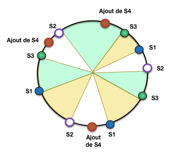
Fig. 85 Ajout d’un serveur¶
Déterminez la nouvelle table de routage après ajout de S4.
Exercice Ex-S3-2: les tables de hachage distribuées (DHT), atelier optionnel
Ceux qui ont de l’apétit pour les structures de données sophistiquées peuvent se pencher sur les différentes tables de hachage distribuées (DHT pour distributed hash tables). Dans cet exercice je vous propose d’explorer une des plus célèbres, Chord. C’est une variante du consistent hashing dans laquelle, contrairement à Dynamo ou Cassandra, on considère que la table de routage varie trop fréquemment pour pouvoir être synchronisée en permanence sur tous les serveurs. Pour des réseaux pair à pair, c’est une hypothèse pertinente. On va donc limiter fortement sa taille et par là le nombre de mises à jour qu’elle doit subir.
Dans Chord, chaque nœud \(N_p\) maintient une table de routage référençant un sous-ensemble des autres nœuds du système, nommé \(friends_p\). Ce sous-ensemble contient au plus \(64\) autres serveurs (pour un espace de hachage de taille \(2^{64}\)). Chaque entrée \(i \in [0, 63]\) référence le nœud \(N_i\) tel que
\(h(N_i) \geq h(N_p)+2^{i-1}\)
il n’existe pas de nœud \(p'\) tel que \(h(N_i) > h(N_{p'}) \geq h(N_p) + 2^{i-1}\)
En clair, le nœud \(N_i\) est celui dont l’arc de cercle contient la clé \(h(N_p) + 2^{i-1}\). Notez que la distance entre les clés couvertes par les « amis » croît de manière exponentielle: elle est de 2 initialement, puis de 4, puis de 8, puis de 16, jusqu’à une distance de \(2^{63}\) correspondant à la moitié de l’anneau!
La Fig. 86 illustre la situation pour m=4, avec donc \(2^4 = 16\) positions sur l’anneau. prenons un nœud S1 placé en position 1. Son premier ami est celui dont l’arc de cercle contient \(2^0=1\). Son second ami doit contenir la position \(2^2=2\), son troisième ami la position \(2^2=4\) et son quatrième et dernier ami la position \(2^3=8\). ct
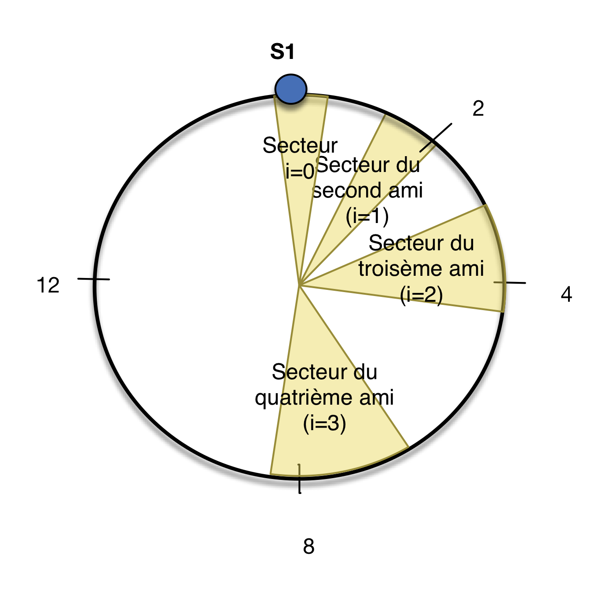
Fig. 86 Illustration de la table de routage dans Chord¶
On remarque que de larges secteurs de l’anneau sont inconnus, et qu’ils deviennent de plus en plus larges. Après le dernier ami, c’est pratiquement la moitié de l’anneau qui est inconnue. Contrairement à la table de routage de Cassandra, la table de routage de Chord est petite (sa taille est logarithmique dans le nombre de positions) mais ne permet pas toujours à un nœud de rediriger la requête vers le serveur contenant les données.
En revanche, et c’est l’idée clé, le nœud a un ami qui est mieux placé. Pourquoi? Parce que chaque nœud connaît d’autant mieux un secteur qu’il en est proche. Il suffit donc de trouver l’ami le mieux placé pour répondre et lui transmettre la requête.
À partir de là c’est à vous de jouer.
Copiez la Fig. 86 et faites quatre dessins équivalents montrant les amis des amis de S1 pour i=2 et i=3.
En supposant que chaque nœud couvre 2 clés, expliquez comment on peut trouver le document de clé k=4 en s’adressant initialement à S1. Même question avec la clé k=8.
Expliquez comment on peut trouver le document de clé k=6 en s’adressant initialement à S1. Même question avec la clé k=12.
Et pour la clé k=14, comment faire? En déduire l’algorithme de recherche,
Quel est le nombre de redirections de messages qu’il faut effectuer (c’est la complexité en communication de l’algorithme).
Vous avez le droit de fouiller sur le web bien sûr, mais l’important est de savoir restranscrire correctement ce que vous aurez trouvé.
{kind=link}
Exercice Ex-S3-3: découverte d’un système basé sur le hachage cohérent (atelier optionnel)
Vous pouvez tester votre capacité à comprendre, installer, tester par vous-même un système distribué en découvrant un des systèmes suivants qui s’appuient sur le hachage cohérent pour la distribution:
Riak, http://basho.com/riak/
Redis, http://redis.io/
Voldemort, http://www.project-voldemort.com/voldemort/
Memcached, http://memcached.org/
Et sans doute beaucoup d’autres. Objectif: installer, insérer des données, créer plusieurs nœuds, comprendre les choix (architecture maître-esclave ou multi-nœuds, gestion de la cohérence, etc.)

Ce cours de Philippe Rigaux est mis à disposition selon les termes de la licence Creative Commons Attribution - Pas d’Utilisation Commerciale - Partage dans les Mêmes Conditions 4.0 International.
Table Of Contents
- Introduction
- Préliminaires: Docker
- Modélisation de bases NoSQL
- Interrogation de bases NoSQL
- MapReduce, premiers pas
- Cassandra - Travaux Pratiques
- MongoDB - Travaux Pratiques
- Introduction à la recherche d’information
- Recherche d’information : l’indexation
- Recherche avec classement
- Recherche d’information - TP ElasticSearch
- Recherche d’information - TP ElasticSearch : pertinence
- Le cloud, une nouvelle machine de calcul
- Systèmes NoSQL: la réplication
- Systèmes NoSQL: le partitionnement
- Calcul distribué: Hadoop et MapReduce
- Traitement de données massives avec Apache Spark
- Traitement de flux massifs avec Apache Flink
- Pig : Travaux pratiques
- Projets NFE204
- Annales des examens
Recherche
Saisissez un ou plusieurs mots-clés.